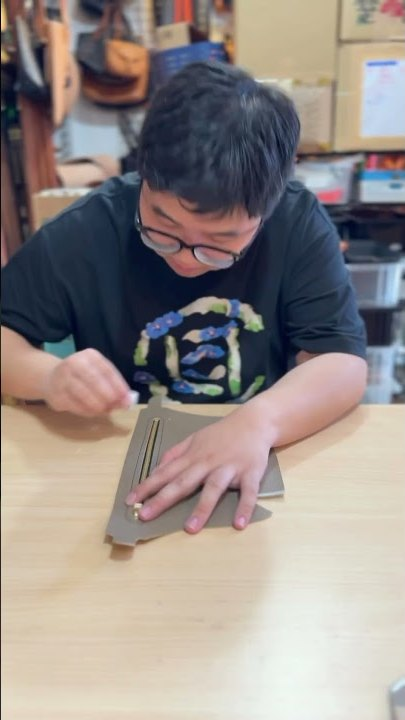

A podcast about leather, from a workshop in Nakameguro
Patina
なめしトーク
革職人ひげちゃんと、ツアーガイドのユウキが革の話をする番組。Patinaは使い込んだ革に出る艶のこと。使うほど味が出る革と同じで、回を重ねるほど番組も育つ。
ひげちゃん（RIO）アールアトリエ中目黒。2016年から会員制の革工房。栃木レザーのサンダルと、靴・バッグのワークショップ。Instagram 5.2万人
ユウキ秋葉原アニメツアーのガイド、日本語教師。Podcastを8番組、編集から配信まで自分でやっている
Show name番組名 8案
全部、革の現場で実際に使う言葉。日本語の副題は「なめしトーク」で固定して、英語の本題を当日1つ選ぶ。
- Patinaユウキの推しパティナ。使い込んだ革に出る艶経年変化を1語で言い切る。革好きなら誰でも知っていて、他の分野の人には少し謎めいて聞こえる。短くてロゴにしやすい。
- Tan Linesタン・ラインズ。鞣す＝tan、話の筋＝lines「なめしトーク」の英語版。タン色の革、ステッチの線、日焼け跡の三重の意味で遊べる。
- Hide & Seekハイド・アンド・シーク。hide＝革（原皮）かくれんぼ。革を探す番組という意味になる。一番キャッチーで、外国人ゲスト回とも相性がいい。
- Full Grainフルグレイン。銀面を削らない最上級の革「本物の話しかしない」という宣言になる。硬派。
- Aging Wellエイジング・ウェル。いい歳の取り方革も人も。ライフスタイル寄りに広げたい時の名前。
- Stitch by Stitchスティッチ・バイ・スティッチ。一針ずつ連載「ユウキ、財布を作る」の進み方そのもの。長く続ける番組の名前として強い。
- The Burnishザ・バーニッシュ。コバ磨き仕上げの工程。職人の番組であることが一番出る。通好み。
- Leather Craft Radioレザークラフト・レディオ説明そのまま。検索には一番強いが、名前としての驚きは無い。保険の1案。
Cornersコーナー企画 8本
毎回2本を組み合わせて30分。どれも準備ゼロで話せる。
革の身の上相談
リスナーの革製品の悩み（カビ・シミ・傷・ほつれ）に職人が即答。写真はInstagramのDMで受ける。
10年後のこの財布
ゲストの持ち物を見て経年変化を予言。半年後に答え合わせ回をやる。
工房ASMR 5分
菱目打ち・手縫い・コバ磨きの音だけ。毎回の頭に固定で流すジングルにもなる。
職人の道具箱
1回に1道具。値段と買った店まで言う。
革の値段クイズ
原価と売値を当てる。ユウキが毎回外す。
外国人ゲスト縫ってみた
ユウキのツアー客が工房で体験。感想は英語のまま流して日本語で解説する。
産地ロケ
姫路・栃木・滋賀の革の街へ。ひげちゃんの仲間の工房を訪ねる。
持ち込み修理ライブ
収録中に壊れた革製品を直す。作業音込みで1本になる。
Series連載企画

全6回 / 各回30分ユウキ、財布を作る
素人のユウキがゼロから二つ折り財布を作る。毎回30分の作業をそのまま録り、進み具合はInstagramに写真で出す。最終回で完成品をリスナーにプレゼント。ワークショップの疑似体験になるので、聞いた人がそのまま予約に来る。
- 革を選ぶ。栃木レザーと他の革の違い
- 型紙と裁断
- 菱目打ち
- 手縫い
- コバ磨き
- 完成。リスナーにプレゼント
Roadmapロードマップ
- 2026.09.18
打ち合わせと同時にパイロット収録
企画を決めたその場で30分録る。録れたものがそのまま第0回。
- 09月中
番組名とジングルを確定
工房ASMRの音からジングルを切り出す。編集と配信はユウキ側の仕組みでやる。
- 10月
第1回から第3回を公開
月2本。財布連載の第1回もここで始める。
- 11月
外国人ゲスト回
ユウキのツアーで来たゲストが工房で縫う。
- 冬
産地ロケ 姫路
革の街を歩く回。ひげちゃんの仲間を訪ねる。
Distribution配信の仕掛け
- 60秒の切り抜きを1回につき3本Instagramのリールで5.2万人に流す。切り抜きの仕組みはユウキ側に既にある。
- 聞いた人の特典「番組聞いた」でワークショップに小さな特典。中身は当日決める。
- YouTubeに手元映像つきで同時公開工房の既存チャンネルを使う。音声だけでなく手元が見える。
- 番組キット財布連載と同じ材料のセットを通販で売る。聞きながら一緒に作れる。
Market市場調査
2026年9月時点で公開されている数字だけ。確認できなかったものは「未確認」と書いている。
18.2%
日本のPodcast利用率（15〜69歳、2025年12月調査）。15〜19歳は40.5%、20代は28.8%
54.8%
番組をきっかけに実際に購入・訪問したPodcastユーザーの割合。検索した人は66.4%
1本
「レザークラフト」を正面から掲げた日本語Podcast。革日和podcast（12話・2025年開始）のみ
7.3万人
YouTube「レザークラフト塾」の登録者。HAKUは3.6万人、ittenレザークラフトchは2.0万人。音声側の受け皿が空いている
- 潜在リスナーの財布minneは累計流通額1,000億円（2023年6月）、作家87万件、作品1,635万点。Creemaは流通165億円、クリエイター28万人。国内ハンドメイド市場は顕在約400億円、潜在3,030億円（クリーマIR）。
- 東京のレザークラフト体験3,300円〜が相場。例: ゆう工房青山 4,580円、関口靴工房の手縫い革靴 14,000円。海外向けは自由が丘のワークショップが約$13.58〜（1.5時間、英日バイリンガル）、JAPAN LEATHER JOURNALのコインケースが2,750円〜（30分）。東京都の観光メディアは墨田・台東の革職人を特集していて、「東京の革」は既にインバウンド商材になっている。
- 成功例ゆる言語学ラジオは「言語」というニッチ一点に絞って伸び、2026年のJAPAN PODCAST AWARDSで大賞。米国のBeyond the Workbenchは革職人が自社通販サイトに番組ページを置き、番組を店の入口にしている。
- 未確認Instagramの #レザークラフト 投稿数、日本のレザークラフト教室市場の規模、Viator・Klook・GetYourGuideの東京レザー体験の掲載件数。
職人×ガイドの対談が無い既存の日本語番組は職人の1人語り、ロンドン在住の職人2人、販売ノウハウの3種類。作り手と外から来た人が同じテーブルに乗る番組が無い。
外国人に説明する層が空いている英語圏の競合は全部「作り方と稼ぎ方」の内向き。東京の革工房を外国人に説明する番組はどちらの言語にも無い。英語版と体験の導線に直結できる。
到達力が最初からある会員制工房とInstagram 5.2万人。ニッチに絞って深掘りする音声を、工房とワークショップで回収する形が最初から組める。
出典: オトナル×朝日新聞社 第6回ポッドキャスト国内利用実態調査（2026年2月） / minne 流通額 / クリーマ IR資料 / アクティビティジャパン 東京レザークラフト体験 / 自由が丘ワークショップ / att.JAPAN Tokyo Leather / ゆる言語学ラジオ
Meeting9月18日 13:00 の進行
60分。最後の10分で録る。
- 10分お互いのゴール確認。何が起きたら成功か
- 15分番組名を8案から選ぶ。コーナーを2〜3本に絞る
- 15分形式。工房で収録・月2本・30分・Spotifyと既存YouTube
- 10分分担。ひげちゃんは話すとInstagramで告知。ユウキは編集・配信・ネタ帳
- 10分パイロット収録。初回ネタは「ひげちゃんはなぜ革職人になったか」
当日決めること
- 番組で一番欲しいものはどれか。教室の予約、通販、ただ楽しい
- Instagramのストーリーズやリールで音声に誘導してよいか
- 既存のYouTubeチャンネルに音声版を流してよいか
- 工房で収録できるか。作業音が入る方が番組の色になる
- 月2本なら続けられるか。無理なら月1本で固定